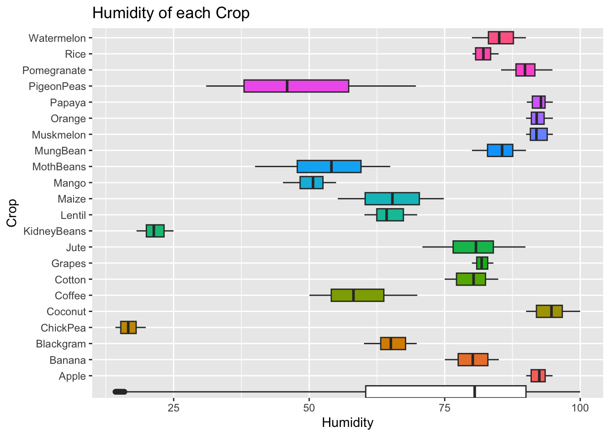

NitrogenPlot <- train1 %>%
ggplot() +
geom_boxplot(aes(x = Nitrogen, y = Crop, fill = Crop)) +
geom_boxplot(aes(x = Nitrogen)) +
labs(title = "Soil Nitrogen in each Crop") +
theme(legend.position = "none")
AvgNit <- train1 %>%
summarise(
mean(Nitrogen)
)
NitrogenPlotCrop Parameters: How Can we Decide on Cover Crops?
Setting up the Data
Statement of Purpose
These plots show the differences of the soil and climate parameters measured for different crops. Some of the parameters are very descriptive for specific crops while others are not so clear. By making a model and describing the meaning behind how crops can be classified, we will be able to make decisions on what cover crop to use on land that will not further degrade the soil for the main crop to thrive when in season. There are many factors that play a part in soil stability and crop yield but these are some of the most important and easily measured parameters.
Cover crops are becoming more important as our food supply is becoming more and more challenged. By reducing erosion and preventing heavy biodiversity loss, farmers can keep soils healthy and increase soil quality. In order to achieve this, identifying cover crop that will grow effectively in a region is crucial to prevent the need for heavy fertilizing and the use of other chemicals.
The combination of the correct climate and the most suitable soil composition can be examined for many of the more distinct crops in this data set.
Exploratory Data Analysis
Nitrogen Plot
This plot shows that there are some crops that are very similar in having a low nitrogen ratio need (Pomegranates, Pigeon Peas, Oranges, Mung Beans, Moth Beans, Mangos, Lentils, Kidney Beans, Grapes, Coconuts, and Apples) while the others (Watermelon, Rice, Papaya, Muskmelon, Maize, Jute, Cotton, Coffee, Chick Pea, Blackgram, and Banana) require a higher nitrogen ratio.
Phosphorus Plot
PhosphorusPlot <- train1 %>%
ggplot() +
geom_boxplot(aes(x = Phosphorus, y = Crop, fill = Crop)) +
geom_boxplot(aes(x = Phosphorus)) +
labs(title = "Soil Phosphorus in each Crop") +
theme(legend.position = "none")
AvgPho <- train1 %>%
summarise(
mean(Phosphorus)
)
PhosphorusPlotIn this plot, Grapes and Apples are outliers, having Phosphorus values that are much higher than the other crops. The remaining 20 crops are still spread between 3 general clusters, close to the lower quartile, close to the mean, and close to the upper quartile.
Potassium Plot
PotassiumPlot <- train1 %>%
ggplot() +
geom_boxplot(aes(x = Potassium, y = Crop, fill = Crop)) +
geom_boxplot(aes(x = Potassium)) +
labs(title = "Potassium in each Crop") +
theme(legend.position = "none")
AvgPot <- train1 %>%
summarise(
mean(Potassium)
)
PotassiumPlotIn this plot, Potassium shows to be similar to Phosphorus in the sense that grapes and apples are large outliers and there seems to be the lower, mean, and upper quartile groups. It will be interesting to compare the other crops to one another to see if the same groups form with both parameters.
Temperature Plot
TemperaturePlot <- train1 %>%
ggplot() +
geom_boxplot(aes(x = Temperature, y = Crop, fill = Crop)) +
geom_boxplot(aes(x = Temperature)) +
labs(title = "Temperature of each Crop") +
theme(legend.position = "none")
AvgTemp <- train1 %>%
summarise(
mean(Temperature)
)
TemperaturePlot
This plot shows the temperature distribution of the crops. Grapes, Oranges, Papaya, and Pidgeon Peas are extremely variable in their temperature range, meaning that climate may be less important than soil parameters.
Humidity Plot
HumidityPlot <- train1 %>%
ggplot() +
geom_boxplot(aes(x = Humidity, y = Crop, fill = Crop)) +
geom_boxplot(aes(x = Humidity)) +
labs(title = "Humidity of each Crop") +
theme(legend.position = "none")
AvgHum <- train1 %>%
summarise(
mean(Humidity)
)
HumidityPlot
This plot shows the different humidity measurements for each of the crops. In this plot there is also two groups with outliers. Chick Peas and Kidney Beans are very low in humidity while the other crops are hovering around the mean and lower and upper quartiles.
pH Plot
phPlot <- train1 %>%
ggplot() +
geom_boxplot(aes(x = pH_Value, y = Crop, fill = Crop)) +
geom_boxplot(aes(x = pH_Value)) +
labs(title = "Soil pH of each Crop") +
theme(legend.position = "none")
AvgpH <- train1 %>%
summarise(
mean(pH_Value)
)
phPlot
This plot shows the distribution of pH in the soil. The value for pH is later found to be not extremely significant as a “predictor” but is still a significant parameter for some crops. Rice, Pomegranate, Pigeon Peas, Moth Beans, Mango, and Chick Peas require less specific pH values than many of the other crops.
Rainfall Plot
RainfallPlot <- train1 %>%
ggplot() +
geom_boxplot(aes(x = Rainfall, y = Crop, fill = Crop)) +
geom_boxplot(aes(x = Rainfall)) +
labs(title = "Rainfall of each Crop") +
theme(legend.position = "none")
RainfallPlotThis plot shows the rainfall in millimeters for each crop. Many are specific to the amount of rain they receive but some crops (Rice, Pigeon Peas, Papaya, Kidney Beans, Coffee, and Coconut) are quite variable.
Model Construction and Analysis
To get some initial idea of important parameters to consider, we will use a Decision Tree model to examine the parameters that may be the most useful in predictive and descriptive power. We will not need to truly predict anything with these models, but we will be able to identify these key parameters and eventually find cover crops that may work well with the crops we have mentioned in this data set.
Initial Decision Tree Model
# A tibble: 1 × 3
.metric .estimator .estimate
<chr> <chr> <dbl>
1 accuracy multiclass 0.968dt_fit1 %>%
extract_fit_engine() %>%
rpart.plot::rpart.plot(type = 0, tweak = 2.5, box.palette = 0, roundint = FALSE) 
This initial Decision Tree model was made to examine what predictors were distinct in each of the crops. By comparing this to geographical location and growing season, we will be able to visualize the important parameters for each crop. Without tuning the model, the “accuracy” metric was taken and shown to be very significant (mean confidence 0.968). The two parameters that were used the most in this Decision tree model were the Rainfall measurement and the Humidity measurement. Interestingly, although pH and temperature are important for plant growth, they were not used at all in this model.
Now that we have observed that our Decision Tree models have not used Temperature and soil pH to distinguish between the crops, we can split our parameters into two groups of classification. The first is the climatic regime, which includes the Rainfall, Humidity, and Temperature and the second will be the soil composition, including Nitrogen, Potassium, Phosphorus, and Soil pH.
Soil Composition Decision Tree Accuracy
dt_spec3 <- decision_tree() %>%
set_engine("rpart") %>%
set_mode("classification")
dt_rec3 <- recipe(Crop ~ Potassium + Phosphorus + Nitrogen + pH_Value, data = train1) %>%
step_normalize(all_numeric_predictors()) %>%
step_impute_mean(all_numeric_predictors()) %>%
step_dummy(all_nominal_predictors())
dt_wf3 <- workflow() %>%
add_model(dt_spec3) %>%
add_recipe(dt_rec3)# A tibble: 1 × 3
.metric .estimator .estimate
<chr> <chr> <dbl>
1 accuracy multiclass 0.755dt_fit3 %>%
extract_fit_engine() %>%
rpart.plot::rpart.plot(type = 0, tweak = 2.5, box.palette = 0, roundint = FALSE)
After running these models, we can see that the climate related parameters are still the most distinguishable compared to the Soil composition parameters. The Decision Tree made with climatic parameters had an accuracy value of 0.86 and the soil composition Decision tree accuracy was 0.75. This would bring us to assume that while soil composition is important, it may not be the driving parameters that allow for healthy crop growth.
Next we will examine the number of times each parameter is used to categorize each crop and create a “K Nearest Neighbor” model to visualize what combination of values for these two parameters is ideal for each crop.
Humidity and Rainfall KNN Model and Visualization
knn_model <- nearest_neighbor() %>%
set_engine("kknn") %>%
set_mode("classification")
knn_rec <- recipe(Crop ~ Humidity + Rainfall, data = train1) %>%
step_normalize(all_numeric_predictors()) %>%
step_impute_median(all_numeric_predictors()) %>%
step_dummy(all_nominal_predictors())
knn_wf <- workflow() %>%
add_model(knn_model) %>%
add_recipe(knn_rec)
knn_fit <- knn_wf %>%
fit(train1)
knn_fit1.1 <- knn_fit %>%
augment(train1) %>%
accuracy(Crop, .pred_class)
knn_fit1.1# A tibble: 1 × 3
.metric .estimator .estimate
<chr> <chr> <dbl>
1 accuracy multiclass 0.904This K-Nearest Neighbor model is also quite accurate (mean confidence 0.90). It is not tuned and is only using Rainfall and Humidity as predictor variables unlike the Decision Tree which was using all of the parameters.
mesh_grid <- crossing(
Humidity = seq(0, 100, length.out = 100),
Rainfall = seq(0, 300, length.out = 100)
#pH_Value = seq(0, 10, length.out = 10),
# Potassium = seq(0, 230, length.out = 10),
# Phosphorus = seq(0, 150, length.out = 10),
# Nitrogen = seq(0, 200, length.out = 10),
#Temperature = seq(0, 40, length.out = 100)
)
mesh_grid <- knn_fit %>%
augment(mesh_grid)
Rain_Humidity <- ggplot() +
geom_point(data = mesh_grid,
aes(x = Humidity, y = Rainfall, color = .pred_class),
alpha = 0.5) +
geom_point(data = train1,
aes(x = Humidity, y = Rainfall, color = Crop, fill = Crop),
alpha = 5) +
scale_color_manual(values = c(c("#E41A1C", "#377EB8", "#4DAF4A", "#984EA3", "#FF7F00",
"#FFFF33", "#A65628", "#F781BF", "#999999", "#1B9E77",
"#D95F02", "#7570B3", "#E7298A", "#66A61E", "#E6AB02",
"#A6761D", "#666666", "#F0027F", "#008000", "#0000FF",
"#800080", "#808000"))) +
labs(x = "Humidity", y = "Rainfall") +
expand_limits(x = 0, y = 0)Rain_HumidityThis plot shows the relative predictions of the crops that grow in its respective Rainfall levels and Humidity levels. There are some crops that are distinct from the others, making more obvious sections in this chart such as Chick Peas, Kidney Beans, Mango, Moth Beans, Rice, and Pigeon Peas. The Rainfall and Humidity values are two good predictors of what crops can be grown in certain climate regimes.
By further examining the graph, you may notice that in high humidity there is lots of overlap between many of the crops. This may be useful information as these crops may thrive in similar conditions. If it is possible to identify what crops have compatible climatic regimes, than it may be possible to have a crop that is less nutrient reliant as a cover crop during the differing parts of the seasons. By doing this (along with careful consideration of the specific nutrients each crop requires) a plan for correct soil treatment (NPK fertilizer application timing and amount) can be made. Doing this for farms can increase the productivity of the soil and prevent excess nutrients from leeching to water sources through erosion, which both depletes the soil of its nutrients and can pollute streams and other water bodies.
like_crops <- train1 %>%
filter(Humidity > 75)
like_crops %>%
count(Crop) Crop n
1 Apple 68
2 Banana 73
3 Coconut 70
4 Cotton 72
5 Grapes 68
6 Jute 55
7 MungBean 74
8 Muskmelon 77
9 Orange 82
10 Papaya 80
11 Pomegranate 77
12 Rice 72
13 Watermelon 87This code filters the data into crops that have a Humidity Value over 75.
like_crops1 <- like_crops %>%
filter(Rainfall > 40) %>%
filter(Rainfall < 130) %>%
group_by(Crop) %>%
summarise(
AvgTemp = mean(Temperature)
)This code filters the data into crops that have a Humidity value over 75 and Rainfall values in between 40 and 130.
train1 %>%
count(Crop) Crop n
1 Apple 68
2 Banana 73
3 Blackgram 73
4 ChickPea 70
5 Coconut 70
6 Coffee 76
7 Cotton 72
8 Grapes 68
9 Jute 71
10 KidneyBeans 75
11 Lentil 78
12 Maize 82
13 Mango 71
14 MothBeans 79
15 MungBean 74
16 Muskmelon 77
17 Orange 82
18 Papaya 80
19 PigeonPeas 75
20 Pomegranate 77
21 Rice 72
22 Watermelon 87Here I have filtered the data set to show the crops that are in the clumped section of the K-Nearest Neighbor visualization. Interestingly, most of these crops are grown on a tree or very large bush which makes it hard to include cover crops into these farms BMP (Best Management Practices) as the tree and bush stay planted in some cases.
knn_model2 <- nearest_neighbor() %>%
set_engine("kknn") %>%
set_mode("classification")
knn_rec2 <- recipe(Crop ~ Humidity + Potassium, data = train1) %>%
step_normalize(all_numeric_predictors()) %>%
step_impute_median(all_numeric_predictors()) %>%
step_dummy(all_nominal_predictors())
knn_wf2 <- workflow() %>%
add_model(knn_model2) %>%
add_recipe(knn_rec2)
knn_fit2 <- knn_wf2 %>%
fit(train1)
knn_fit21 <- knn_fit2 %>%
augment(train1) %>%
accuracy(Crop, .pred_class)
knn_fit21# A tibble: 1 × 3
.metric .estimator .estimate
<chr> <chr> <dbl>
1 accuracy multiclass 0.893mesh_grid2 <- crossing(
Humidity = seq(0, 100, length.out = 100),
#Rainfall = seq(0, 300, length.out = 100)
#pH_Value = seq(0, 10, length.out = 10),
Potassium = seq(0, 230, length.out = 100)
# Phosphorus = seq(0, 150, length.out = 10),
# Nitrogen = seq(0, 200, length.out = 10),
#Temperature = seq(0, 40, length.out = 100)
)
mesh_grid2 <- knn_fit2 %>%
augment(mesh_grid2)
Pot_Humidity <- ggplot() +
geom_point(data = mesh_grid2,
aes(x = Humidity, y = Potassium, color = .pred_class),
alpha = 0.5) +
geom_point(data = train1,
aes(x = Humidity, y = Potassium, color = Crop, fill = Crop),
alpha = 5) +
scale_color_manual(values = c(c("#E41A1C", "#377EB8", "#4DAF4A", "#984EA3", "#FF7F00",
"#FFFF33", "#A65628", "#F781BF", "#999999", "#1B9E77",
"#D95F02", "#7570B3", "#E7298A", "#66A61E", "#E6AB02",
"#A6761D", "#666666", "#F0027F", "#008000", "#0000FF",
"#800080", "#808000"))) +
labs(x = "Humidity", y = "Potassium") +
expand_limits(x = 0, y = 0)Pot_Humidity
POT_HUM <- train1 %>%
filter(Humidity < 70) %>%
filter(Humidity > 55) %>%
filter(Potassium < 25) %>%
filter(Potassium > 15) %>%
filter(Rainfall < 130) %>%
filter(Rainfall > 40)
POT_HUM %>%
count(Crop) Crop n
1 Blackgram 52
2 Lentil 53
3 Maize 55
4 MothBeans 21
5 PigeonPeas 10Here I have filtered crops that have values of Humidity in between 55 and 70, Potassium values in between 15 and 25, and Rainfall values in between40 and 130.
POT_HUM1 <- train1 %>%
filter(Humidity < 100) %>%
filter(Humidity > 75) %>%
filter(Potassium < 60) %>%
filter(Potassium > 30) %>%
filter(Rainfall < 130) %>%
filter(Rainfall > 20)
POT_HUM1 %>%
count(Crop) Crop n
1 Banana 73
2 Muskmelon 77
3 Papaya 34
4 Pomegranate 77
5 Watermelon 87Here I have filtered crops that have values of Humidity in between 75 and 100, Potassium values in between 30 and 60, and Rainfall values in between 20 and 130.
General Conclusions
After filtering another section of the graph where there are many overlaps, we can see that 5 of the crops have similar levels of Humidity, Rainfall levels and Potassium. This may be a slight indicator of what crops may be compatible with one another based on the climatic and at least one soil composition parameter that are specific to the crop. As mentioned previously though, crops that are grown on trees are sometimes not applicable because the trees are generally not disturbed between growing seasons. Bananas, Oranges, and Coconuts are a few that are an exception as they need these parameters for a long period of the year so the tree can grow fast, and the trees may be cut down in between harvests.
There are many more crops than in this data set but one good example of cover cropping is the cultivation of maize. Maize/Corn is an extremely popular crop as it is used for many human foods and animal feed, so effective cultivation is important. In the United States, corn is very prevalent in the mid-west as there is lots of fertile soil. By looking at crops with similar parameters to Maize, Lentils have a very similar need for Humidity, Rainfall, and Potassium. The Temperature, Nitrogen and Phosphorus values are not identical, but they are compatible enough for Lentils to be effective cover crops.
Generally, when considering cover crops, crops that are less water and nutrient reliant than the main crop are desired. Regarding the relationship of Maize and Lentils, Lentils require less Nitrogen than Maize, which means the lentils will have two benefits. One: When planted, roots will stabilize the soil aggregates, reducing erosion of sediment and chemicals. Two: Because the Lentils require less Nitrogen, the growing and cultivation of the plant will allow for soil nitrogen fixation. This is beneficial because the farmers will be able to use less fertilizer but get strong crop yields.
Further examination of many parameters are important for accurate analysis of some of these crops. Temperature may be deceiving because the growing season temperature in the Northern Hemisphere is similar temperature to the Southern Hemisphere but the length of the season is different. The same is for Humidity, the length of time that it is humid matters for many of the crops. For Maize and Lentils, examining the many other parameters is a good start to analyze the best cover crop options. This data set also does not include logistics of how the crops grow, as I mentioned previously, if the crop is a tree, cover crops may look different with a crop like Maize or Peas.